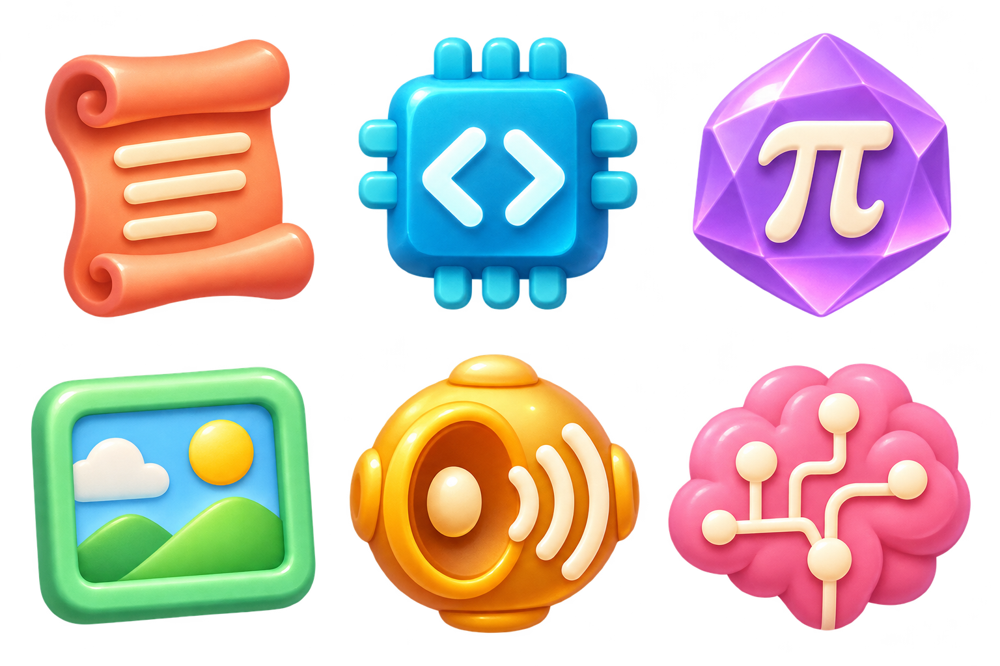
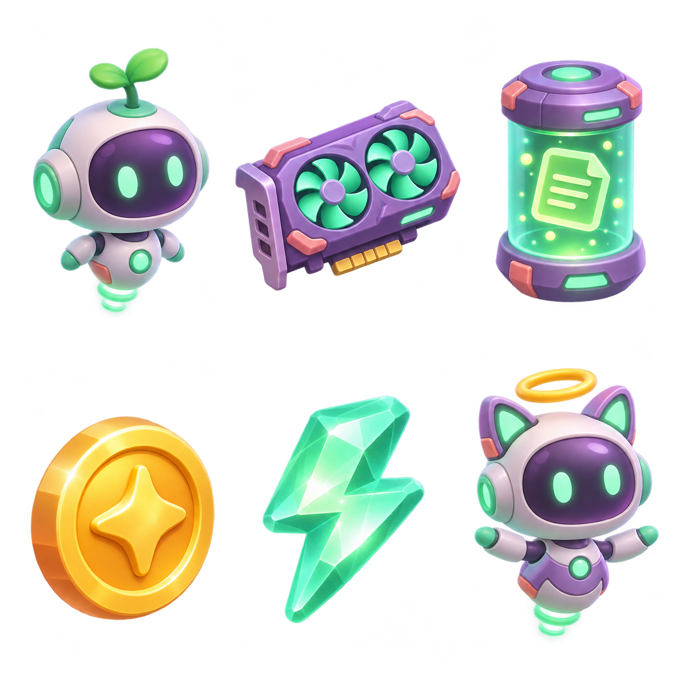
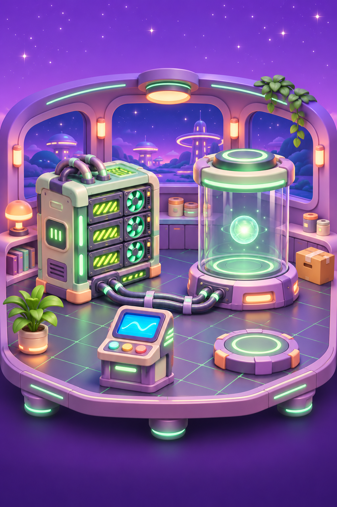

全民训练大模型 · 原创美术
新版是竖屏三消养成小游戏。以下三组素材已接入游戏，画面、道具与界面分层，不把按钮烘焙进插画。设备外形为游戏化设计，型号参数另附官方资料。
01 · 六类训练数据
文本、代码、数学、图像、语音、推理。不同颜色与轮廓，帮助玩家一眼找到三个相同道具。三个同类原始数据消除后，得到一份游戏内训练数据。

02 · 模型角色、设备与奖励
模型幼体和进阶体负责养成反馈；显卡、数据、金币和能量分别用于升级、训练与奖励动画。成长数值为虚构游戏规则。

03 · 模型宇宙的机房场景
柔和的紫色机房搭配薄荷绿算力设备。新版用作养成区域背景，避免把静态画面误当成可操作设备。

美术为 AI 生成原创风格素材。未使用参考游戏的截图、角色、音乐作为游戏资产。金币与背景音乐使用原创 Web Audio 合成。
查看玩法与美术参考调研 →回去消除，继续训练 →